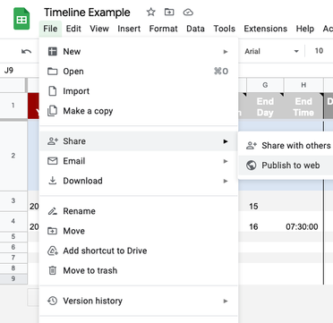
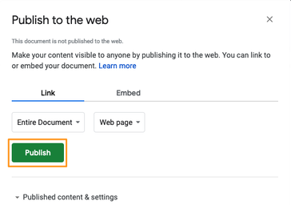
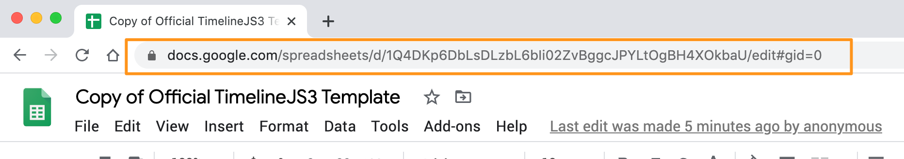

TimelineJS is an open-source tool that enables anyone to build visually rich, interactive timelines. Beginners can create a timeline using nothing more than a Google spreadsheet, like the one we used for the Timeline above. Experts can use their JSON skills to create custom installations, while keeping TimelineJS's core functionality.
Tips & tricks
- Keep it short. We recommend not having more than 20 slides for a reader to click through.
- Pick stories that have a strong chronological narrative. It does not work well for stories that need to jump around in the timeline.
- Write each event as a part of a larger narrative.
- Include events that build up to major occurrences — not just the major events.
Media sources
TimelineJS can pull in media from a variety of sources. Twitter, Flickr, YouTube, Vimeo, Vine, Dailymotion, Google Maps, Wikipedia, SoundCloud, Document Cloud and more!
Examples


Make a Timeline
TimelineJS works on any site or blog. Make your own in four easy steps.
Having trouble? Watch our video, or see the help section below.
-
Create your spreadsheet
Build a new Google Spreadsheet using our template. You'll need to copy the template to your own Google Drive account by clicking the "Make a Copy" button.
Drop dates, text and links to media into the appropriate columns. For more about working with our template, see Making a timeline from a Google Spreadsheet
Get the Spreadsheet TemplateDon't change the column headers, don't remove any columns, and don't leave any blank rows in your spreadsheet.
-
Publish to the web
 Under the File menu, Share submenu, select “Publish to the Web.”
Don't set your Timeline Google Sheet to "anyone with the link can edit." It isn't necessary, and could lead to someone changing your timeline without your consent.
 In the next window, click the green "Publish" button. When asked, "Are you sure…?" click OK. Ignore the URL that appears in the center of the window. Just close the window using the X in the top right corner.
 After you close the window, copy the URL in your browser's address bar. You'll use this in the next step.
If you get an error message referencing an "Invalid Google URL," please review the above instructions. You must use the Google Sheets URL from your browser's address bar, not the one from the "publish to the web" popup.
Generate your timeline
Copy/paste spreadsheet URL into the box below to generate your timeline. (Make sure you've published the spreadsheet.)
Share your timeline
Share Link
Use this to link directly to your timeline.
If you're embedding on Medium.com or other oembed-aware services, just paste this link on a line by itself where you want your timeline to appear.
Embed
Copy this embed code and paste it on your site where you want your timeline to appear (just like a YouTube video).
Preview Open Preview in a new windowPreview Embed
Help
Need help? First, please be sure to look at our list of frequently asked questions below. If you're brand new to Timeline JS, you may also want to watch our introductory video.
If you don't find an answer there, try our support forums or use our tech support web form. Please be clear with your question, include a link to your spreadsheet, and if appropriate, a link to a page which shows the issue with which you need help. We can only answer support questions in English. We try to be prompt, but please understand that we do not have a dedicated tech support staff.
Find a bug? If you are confident you have found a bug, please report it as a GitHub issue. Be sure to include detailed instructions on how to reproduce the bug. If you're not sure, please start with the tech support system.
Technical documentation
Go further with Timeline:
Frequently asked questions
-
How do I edit my timeline?
Once you've created a timeline, you can make changes by going back to your Google spreadsheet. Changes you make to the spreadsheet are automatically available to your Timeline—you don't need to repeat the 'publish to the web' step (step #2). If you want to make changes to the optional settings, you will need to update your embed code, but if you are only changing content in the spreadsheet, then there's nothing else to do. -
What web browsers does TimelineJS work with?
Our primary development and testing browser is Google Chrome. We adhere closely to web standards, so we believe that TimelineJS should work effectively in all modern web browsers. TimelineJS is known to not work with Internet Explorer versions before IE10. -
Some of my slides aren't showing up. Where are they?
If the slides which aren't appearing are at the end of your timeline, look for a blank spreadsheet row right after the last slide which is appearing. When TimelineJS asks Google for your data, Google only sends up to the first blank row, so TimelineJS is actually showing everything that it can. Don't forget to look for hidden spreadsheet rows or rows with a very small height. -
What are my options for changing how my Timeline looks?
First, make sure you know everything you can do in the spreadsheet configuration, like background colors and images. Also, check out the optional settings part of 'step 3' of the authoring tool. You can change the fonts, the position of the timeline navigation, and the initial zoom level. If you still want to do more, there are some configuration options available. Most of those are for fine tuning, but some of them may be helpful. -
There aren't enough options. I want more control over the [font size/color/etc]. Can I change things using CSS?
Because there are so many details to the styling, this is not exactly simple, but, if you have some technical capacity, you can override TimelineJS's <abbr title='Cascading Style Sheets'>CSS</abbr> rules and have complete control over the look of the timeline. For details, see <a href='/docs/overriding-styles.html'>Overriding Timeline's Styles</a>. -
How can I categorize or group my events?
Every event in a timeline can have a group property. Events with the same group are shown in the same row or adjacent rows, and the common value of their group property is used as a label at the left edge of the timeline. Groups can be set using the 'group' column in the Google Spreadsheet or the 'group' property of a JSON slide object. TimelineJS does not support any other special styling for events in the same group. -
The first slide in my timeline isn't the first chronologically. Why did this happen?
When using the Google Spreadsheet to configure your timeline, if you put the word <code>title</code> in the <code>type</code> column, that slide will be put at the front, regardless of the values in the date columns. See the <a href='/docs/using-spreadsheets.html#title_slides'>Google Spreadsheet documentation</a> for more information. -
Can I make media images clickable?
No. Many of TimelineJS's media types are interactive, and so would not be able to handle a link, and other of TimelineJS's media types have terms of service which require a link back to the source of the media. As an alternative, consider using HTML to add links in the caption, credit, or text for the slide. -
How can I format text (add line breaks, bold, italics)?
TimelineJS's text fields (headline, text, caption, and credit) all accept HTML markup. A full tutorial on HTML is outside the scope of this FAQ, but here are a few basics:<br><ul><li>Wrap paragraphs in <code><p></p></code> tags to create line breaks.</li><li>Wrap text in <code><b></b></code> tags for <b>bold</b> text and <code><i></i></code> for <em>italics</em></li></ul> -
How do I enter BCE dates?
To enter dates before the <a href='https://en.wikipedia.org/wiki/Common_Era'>common era</a>, just use a negative value for the year. Of course, you can also enter month and date if you need them. -
How do I create very ancient dates?
Generally, you don't have to think about it -- just enter the dates you want. Timeline can handle dates literally to the beginning of time. For dates more than about 250,000 years ago, only the year is usable. Support for those older dates is still relatively new, so if anything seems off, visit our <a href='http://knightlab.zendesk.com'>tech support site.</a> -
Who can access the data in my Google spreadsheet?
You must make the data public to the web to use TimelineJS with a Google Spreadsheet as the data source. Normally, the data is still only visible to people who know the link, so if you publish a timeline privately, outsiders are unlikely to see the data. However, it is still public, so you must decide if that is acceptable. -
Privacy is very important to me. How should I use TimelineJS?
If you want complete control over who can see the information in your timeline, you cannot use Google Spreadsheets, and you cannot use our standard <code>iframe</code> embed code. Instead, you must use <a href='/docs/json-format.html'>JSON format</a> for the data and <a href='/docs/instantiate-a-timeline.html'>instantiate the timeline</a> directly using javascript. You can then use standard web server security measures to control who has access to your timeline and the data used to create it. -
Will my spreadsheet get picked up by search engines?
Under normal circumstances, Google tells search engines not to index spreadsheets which are published to the web. Of course, if the page is public on the web, it is possible that a search engine will disregard those instructions. -
Can I use TimelineJS with Wordpress?
<strong>It depends.</strong> TimelineJS does not work with Wordpress.com sites. We are researching ways to address this.<br>If you are able to install plugins to your Wordpress installation, we have a <a href='https://wordpress.org/plugins/knight-lab-timelinejs/''>Wordpress plugin for Timeline</a>. It supports embedding Timelines with Wordpress "shortcode", and as of version 3.3.14.0, it also has experimental "oembed" support. That means that you can take a direct URL to a timeline (like you get with the "get link to preview" button) and put it in a post on a line by itself, and it should be embedded. (Make sure you've updated the plugin before you try it.) -
Is TimelineJS free for commercial use?
TimelineJS is released under the <a href='https://www.mozilla.org/en-US/MPL/2.0/'>Mozilla Public License (MPL), version 2.0</a>. That means that TimelineJS is free to "use, reproduce, make available, modify, display, perform, distribute" or otherwise employ. You don't need our permission to publish stories with TimelineJS and you don't need to pay us any fees or arrange any further license beyond the MPL. To read more about what you can do with TimelineJS, read our <a href='/docs/license.html'>license page</a>.
Storytelling Tools
We build easy-to-use tools that can help you tell better stories.
View More